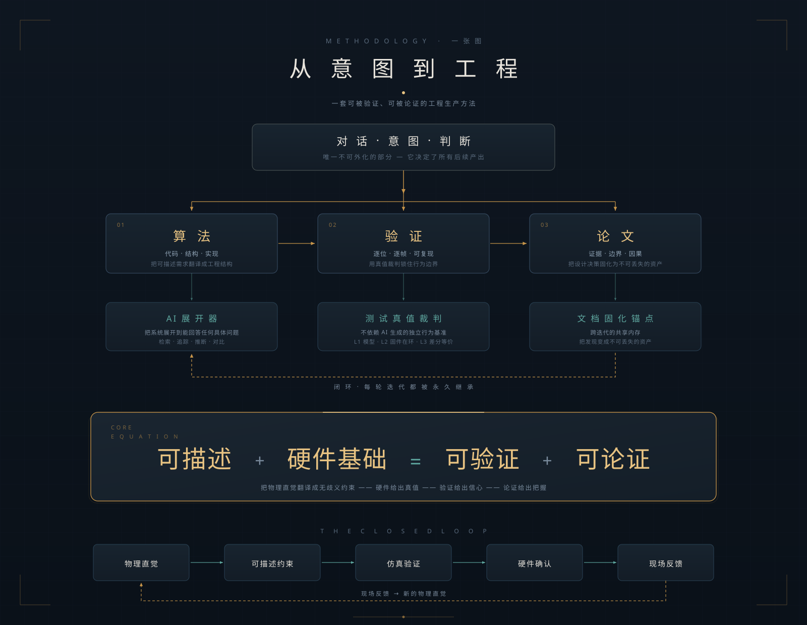

① 可证伪断言
每句话都得站得住验，不能停在"看起来对"。
从单次价值最大化的「一鱼多吃」，升级为长期无限复利的「一劳永逸」：双层知识复用定义 · 四维资产闭环 · 结构同构识别 · 执行-积累-复用三层架构 · AI入驻源码的自举闭环——让每一次投入，都产生永久可复用的系统资产。
这是我压箱底的一套工作方法。核心动作只有一个：换一种"要求"。别让 AI 写文档，让它写论文。就这一改，它在那些靠一次聪明解决不了的复杂系统里，产出的结论就稳得多——能验证，也能论证。

同一个 AI、同一个系统，喂进去的知识也一样。可让它"写文档"和让它"写论文"，输出完全不是一个层次。这个差距跟篇幅没关系，主要是每句话的断言强度不同：文档觉得"看起来合理"就能过，论文过不了，论文得能被证伪。
所以我后来把论文格式当成一种工具用。它约束的是表达，真正起作用的地方却在思考这一步——格式摆在那儿，你没想清楚，就写不下去。
这七条，说到底都是逼 AI 把一个模糊的推理讲清楚。七条一起上，它就从"讲故事"被拽到了"给论证"。
每句话都得站得住验，不能停在"看起来对"。
新贡献要交代清楚跟已有工作的关系，别重新发明轮子。
得说明白新在哪，含糊带过不算。
模糊的主张要落到数字上，"很快"得变成"5200 ms"。
结论要有前提撑着，不能只有"我觉得这样"。
得承认这方法在哪儿不管用，别当成万能药。
给出的数字要能被复核，光说"我们测了"不行。
这三根支柱不是我另外发明的东西，它们是论文格式的副作用——你按格式写，就必然要做这三件事。
把系统展开到能回答任何具体问题。
检索 · 追踪 · 推断 · 对比
不依赖 AI 生成的独立行为基准。
L1 模型 · L2 固件在环 · L3 差分等价
跨迭代的共享内存，把发现变成不可丢失的资产。
发现 → 论文 → 回归用例 → 可被检索
| 论文格式要求 | 强制哪一柱 | 强制方式 |
|---|---|---|
| 可证伪断言 | 测试真值裁判 | 断言必须有验证手段 |
| 相关工作定位 | AI 展开器 | 差异必须逐维度检索 |
| 明确贡献列表 | 三柱全用 | "新在哪"需要检索 + 验证 + 记录 |
| 形式化陈述 | 测试 + 文档 | 精确数字来自测试，记录来自文档 |
| 论证链条 | 三柱全用 | 前提显式化需要检索 + 验证 + 记录 |
| 边界声明 | 三柱全用 | 边界需要检索已有方案 + 测试极端条件 + 记录分析 |
| 可复现数据 | 文档固化锚点 | 数据必须结构化记录 |
"可证伪"要落到实处，就得有个不依赖 AI 生成内容的独立基准。测试台就是这个基准：三层验证体系，拿真实固件给 AI 的每个结论打分。
Python 模型 · 与固件 1:1 对齐
回答：算法对不对、收敛性成不成立。不能回答：真实时序。
真实固件源码编成的本机进程
回答：真实状态机 / 常量 / 时序下的行为。不能回答：模型是否已漂移。
同激励下 固件 vs 模型 逐帧逐字节
回答：模型是否仍是固件的忠实等价物——补齐"模型漂移"这一层。
| 测试台能力 | 作用 |
|---|---|
| 总线全帧留痕 | 每一帧都留痕，图与结论由真实帧序列导出——不得把推导冒充实测 |
| 背景负载注入 | 把负载从轻载 1.4% 拉到现场级 38%，验证落位 / 计数 / 收敛时间逐项不变 |
| 形态 / 相位矩阵 | 8 种接入形态 × 5 个插入时刻，穷举那些"没想到要测"的边界组合 |
L3 差分实际抓到过四类真实差异：OFFER 首次抖动机理、重试间隔、ISN 复用、PROBE 应答抢占。这几处都得跑一遍、对着数值才能发现，读代码很难一眼看出来。这类"半对半错"的实现，人工审查也很难发现。
测试台当前战绩：L1 行为级 17/17 · L2 固件在环 8/8 · L2 相位矩阵 5/5 · L3 差分等价 8/8 逐帧逐字节一致。
把物理直觉翻译成无歧义约束 —— 硬件给出真值 —— 验证给出信心 —— 论证给出把握
它省下的是往后每一次重头再来的功夫。
普通开发里，每迭代一次就丢一次知识；这套方法把"修完 bug"的结论写成引理 / 不变量 / 边界声明，下一次迭代直接在它上面叠。单次改动的重新理解成本就不会再随迭代次数往上堆。它省下的不只是这一次，是往后每一次。
每一类意外都有固定的去处：现场出问题 → 回填仿真成回归用例；审阅挑出隐含前提 → 写成引理 / 不变量；AI 建议破坏全局 → 由测试拦住；新机制落地 → 模型必须同步。每一次波动，都被顺手转化成了资产。
闭环 · 每轮迭代都被永久继承 —— 现场反馈回到新的物理直觉，然后从头再来一轮。
| 序 | 文章 | 定位 |
|---|---|---|
| 1 | 五层进化 | 总纲 · 成熟度模型 / AI 自治 / 体系坐标 |
| 2 | 实践项目模板 | 执行基础 · 工程骨架 / 规约 / 上下文 |
| 3 | 自主修复闭环 | 执行智能 · 双轨收敛 / 测试 / 日志驱动 |
| 4 | 从收敛到进化 | 判断智能 · Agent 制衡 / 决策切换 / 共生演化 |
| 5 | 知识的生命体征 | 记忆智能 · 知识资产 / 负日志 / 健康度 |
| 6 | 电路图分析器 | 感知根系 · 电路图 / 硬件上下文 / 代码关联 |
| 7 | 最后的拼图：Skills | 支撑根系 · Skills / 复用 / 快消费应用 |
| 8 | 历史的包袱 | 专业延伸 · 遗留工程 / 工具链迁移 / 抽象层 |
| 9 | 被忽视的工具链组合 | 专业延伸 · ARM GCC / OpenOCD / GDB / 硬件闭环 |
| A | 固件铭牌与设备画像 | 专业延伸 · 固件身份 / 设备画像 / 版本血缘 |
| B | 合规验证与 AI 编程 | 专业延伸 · GMP / 验证报告 / 合规证据 |
| C | GxP 法规工程化 | 专业延伸 · 750 页法规到可运行系统的全链路落地 |
| D | LIMS 系统集成法则 | 专业延伸 · ASTM E1578 标准与 18 条可落地集成法则 |
| E | 医疗器械注册通道 | 专业延伸 · NMPA 注册通道拆解与工程化路径选择 |
| F | 回归现实：单 Agent 实践框架 | 综合实战 · 单 Agent / 决策账本 / 轻量落地 |
| G | AI 编程的利刃 | 工程利器 · 测试脚本 / 自我调试 / 负日志 |
| H | 批量修改，先问该不该用脚本 | 工程利器 · 模式判断 / 脚本生成 / 批量改造 |
| I | 拆解与整合 | 高阶心法 · 复杂系统 / 逐块收敛 / 整体验证 |
| J | AI的谄媚与专利文件的编写 | 守关心法 · 反谄媚 / 专利审查 / 风险清单 |
| K | 始于工程，服务生活 | 内核反照 · 工程法则 / 人生方法 / 思维外延 |
| L | 君子不器与灵活调度 | 工程心法 · 主体性 / 灵活调度 / 够用原则 |
| M | 别把AI用成付费上班 | 工程心法 · 够用原则 / 分层路由 / 性价比 |
| N | 别让AI画图，让它写图 | 工程心法 · SVG代码画图 / 编号系统 / 分层策略 |
| O | 当AI闯入你的代码王国 | 工程心法 · 同一个时代两种失眠 / 节奏旋钮 新 |
| P | 信任黑箱：Context Engineering | 工程心法 · 上下文工程四大模块 / 黑箱可控外壳 新 |
| Q | 从一鱼多吃到一劳永逸 | 工程心法 · AI知识中枢 / 结构同构识别 / 自举闭环 新 |
| 序 | 文章 | 定位 |
|---|---|---|
| 1 | 我找到了一套法则 | 总序 · 把法则写清楚 |
| 2 | 以不变应万变 | 认知 · 从 AI 编程推到生活法则 |
| 3 | 工程魔法 | 心法 · 用工程法则处理生活问题 |
| 4 | 调试AI，学会经营感情 | 关系 · 工程法则进入亲密关系 |
| 5 | 乾坤大挪移心法 · 文章总览 | 索引 · 技术主线全图 |
| 序 | 文章 | 定位 |
|---|---|---|
| 1 | 爱婷哥 | 家庭 · 命名、亲密与温柔 早 |
| 2 | 写给自己 | 自省 · 写给未来的自己 早 |
| 3 | 家庭直播间 | 日常 · 配合、接话与快乐回路 早 |
| 4 | 周一早上，梦见下班 | 日常 · 疲惫、松弛与提醒 早 |
| 5 | 我可能哪里错了 | 思辨 · 反驳比顺从更稀缺 往 |
| 6 | 找个不懂的人聊聊 | 方法 · 外行视角与范式切换 往 |
| 7 | 他们的提示词，我的交付物 | 心法 · 把人际交互变成提示词与交付的闭环 往 |
| 8 | 一秒钟的感动 | 亲子 · 双奔赴的温柔与一整个下午的棋盘 新 |
| 9 | 不必全部收敛 | 哲思 · 给生活保留余味 近 |
| 10 | 最差的脾气，留给最亲的人 | 自省 · 情绪管理与亲密关系 新 |
| 11 | 先稳，再赢 | 心法 · 先胜再战的完整路径 近 |
| 12 | 提供情绪价值的三种姿势 | 心法 · 真诚看见与克制的表达 新 |
| 序 | 文章 | 定位 |
|---|---|---|
| 1 | 会话的碰撞 | 创作 · 两个 AI 窗口的化学反应 |
| 2 | 从碰撞到分工：三足鼎立 | 引擎 · 三足鼎立的分工体系与创作流水线 |
| 3 | 我的创作永不枯竭 | 自述 · 系统迭代增量驱动创作的终极闭环 |
| 4 | 我承认文章都是AI洗稿 | 方法论 · 碎片采集/AI装配/五维质检的工业级内容流水线 |
| 5 | 四层结构：创作体系 | 体系 · 理论 / 人格 / 文学 / 元创作 |
| 6 | 架构定乾坤，笔墨随法则 | 方法论 · 工程化 AI 创作流水线 |
| 7 | 十日一剑：创作手记 | 手记 · 复盘 T·L1~L4 如何在十天内成形并开始自解释 |
| 8 | 像调试代码一样创作 | 纪实 · 把创作工作流做成可观测、可回放、可调试的虚拟工作台 |
| 9 | 我不用天赋，我只用方法 | 自述 · 用工程方法论驾驭创作与设计，不依靠直觉与灵感 |
| 序 | 文章 | 定位 |
|---|---|---|
| 后记 | 侠士自述 | 始于工程，穿过生活，抵达文学，再在元创作里解释自己 |
一句话收束：这里既不是技术手册，也不是作品集，更像一个工程师的记录：同一套法则，从嵌入式一路用到生活、关系、小说，最后连"怎么创作"这件事本身也拿它解释了一遍。代码、故事、创作，说到底都是这套法则在不同面上的样子。